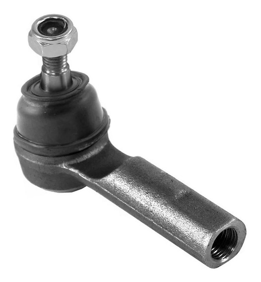

O terminal interfere na segurança e no funcionamento do automóvel, já que afeta diretamente a estabilidade do carro. A peça interliga um tipo de articulação a roda do veículo e assim, permite que você faça curvas ou rotatórias.